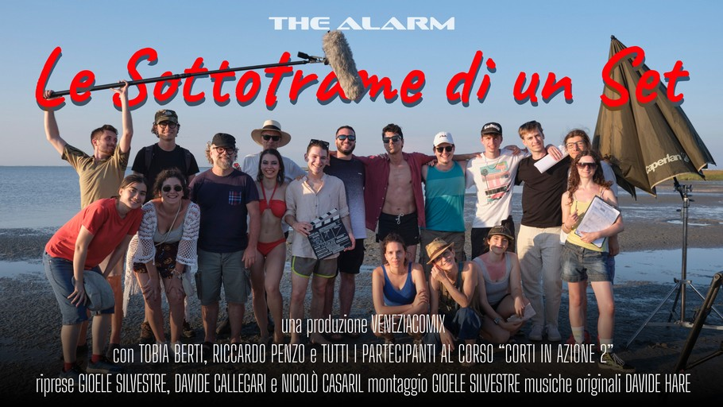

Tra ottobre e novembre 2025 mi sono dedicato al montaggio di un video backstage che esplora il set di The Alarm, un corto diretto da Tobia Berti nell'ambito del corso "Corti in... Azione 2" di cui ero corsista. L'idea è partita da una necessità: quella di condividere con gli altri membri della troupe la quantità sproporzionata di materiale di backstage che avevo girato durante le riprese.
Ben presto mi sono reso conto che un video con solo le riprese dal set non sarebbe mai risultato interessante per un visitatore esterno, quindi ho deciso di intervistare Tobia Berti (il regista del corto) per arricchire il contenuto. Li si trovava anche Riccardo Penzo (uno degli attori del corto), quindi perché non fare qualche domanda anche a lui?
Durante il montaggio ho mantenuto uno stile cinematografico e quasi documentaristico, nei tagli, nelle grafiche e nell'uso della musica. Non mancano mie esplorazioni personali del linguaggio cinematografico con diverse parti in cui ho sperimentato liberamente.
Puoi vedere il video cliccando qui
